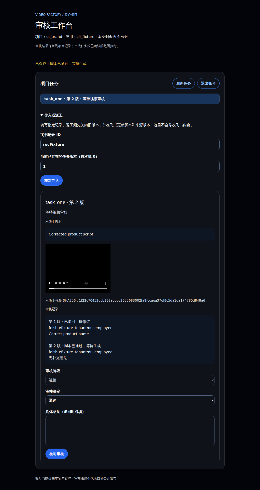

网页工作区
用飞书登录，创建任务、审核脚本与视频，通过后下载结果。
团队的视频制作工作区
把商品资料变成脚本和视频，集中审核、修改和下载。服务与数据，留在你的服务器。
查看安装步骤 ↓管理员安装，员工通过网页工作。
看看实际怎么用
资料在表格里整理，执行交给工作流，结果在网页里审核。
商品、脚本、负责人都有对应记录。把选定任务导入工作区，继续生成和审核。
表格结构示例 · 虚构数据| 视频任务 | 商品 SKU | 脚本内容 | 负责人 |
|---|---|---|---|
| 新品介绍 | CUP-01 | 先展示外观，再呈现使用方式 | 林 小林 |
| 细节展示 | CUP-01 | 近景展示杯盖与杯身细节 | 陈 小陈 |
| 日常场景 | BAG-02 | 用一个场景说明商品用途 | 林 小林 |
任务可导入工作区；生成结果与审核记录保存在客户服务器。
n8n 按已授权的任务调度。需要修改时回到审核环节，保留前一版记录。
执行逻辑示意
先了解产品
用飞书登录，创建任务、审核脚本与视频，通过后下载结果。
新建或连接已有表，整理商品和任务。现有任务可导入，生成结果暂不自动写回。
入口网址、账号负责人、备份位置，以及已完成和待处理的事项，都有记录。
Skill 是给 AI 助手（Agent）执行的安装说明。管理员用它安装、加项目和排查问题；员工日常只用网页。
安装指南
下载 Skill，复制指引，一起交给能操作服务器的 AI 助手。已有 Skill 时，只需复制指引。
连接服务器，安装服务，配置第一个项目。
你提供信息、确认设置；助手检查环境并执行安装。
你选择客户、服务器和第一个项目。助手核对目标，避免影响已有项目。
助手检查系统、空间和网络，核验安装包，再准备运行环境和服务。
你设置管理员密码，提供商品资料和参考图片。助手整理配置，交给你确认。
你完成飞书授权，选择新建测试表或连接已有表，并确认提交人和审核人。
你填写模型密钥、确认费用账户。助手配置网页访问地址，并检查是否能正常登录。
从商品资料生成脚本，修改并审核，再确认视频生成。完成后检查结果，并记录入口、备份和剩余问题。
当前接入 DeepSeek Flash 生成脚本、MiniMax H3 生成视频。安装本身不会调用模型；实际生成前需要你确认，模型费用计入你配置的模型账户。生成结果仍需人工审核。
后续新增项目
同一客户不用重装 Skill 和基础服务，只需配置新项目的商品、飞书表格、人员和模型账户。
员工入口按项目配置，目前没有统一的项目切换首页。
例如，从夏季新品到秋季上新
“新增一个秋季上新项目，保留夏季新品项目。用现有服务，带我完成配置。”
助手会检查已有安装，保留原项目，再询问新项目所需的信息。
谁需要使用 Skill？
负责安装和维护的管理员或实施同事。日常员工打开对应项目的网页即可工作，不需要安装 Skill。
使用与维护
从第一次安装，到日常使用和后续维护。
安装完成后，你会收到员工工作区的网址和飞书表格链接。员工打开工作区，用自己的飞书身份登录。项目管理员负责授予成员权限；不要把安装指南页当作员工登录页。
可以新建飞书多维表格（Base），也可以连接已有表，把表里的任务导入工作区处理。当前新生成的任务、审核记录和视频保存在服务器工作区，不会自动写回飞书表格。
n8n 是在后台安排任务执行的工具，安装流程会部署它。员工日常使用 Video Factory 网页即可；n8n 的管理账号由客户管理员保管。
可以复用同一份 Skill。每次先确认客户和目标服务器，不同客户分别安装；客户自行保管账号、密码和模型密钥。
选择“继续上次安装”，把已有的安装交接记录交给助手。它会检查已经完成的步骤，再从中断处继续。如果找不到记录，先定位原安装，不直接重装。
管理员让助手检查当前版本，再安排升级、备份和必要的恢复准备。更新电脑里的 Skill 不会自动升级服务器，正在使用的项目也不会因为新增项目而自动升级。
选择“排查问题”，说明哪个项目、做到了哪一步、页面显示什么错误。助手先检查原因，再提出处理办法。需要联系实施同事时，提供已去除敏感信息的报错与操作步骤，不提供密码或模型密钥。
官网 AI 页面介绍整体方案；这里介绍 Video Factory，并提供安装说明。日常任务由客户自己服务器上的员工工作区处理。